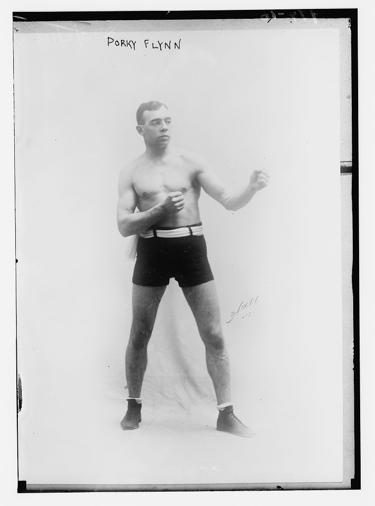

About Page
My Irish forefathers put root down in Boston. My great-grandfather Dan "Porky" Flynn boxed his way through stiff heavyweight competition, earning title fights against the best in the world, including legend Jack Dempsey. Through a series of events, perhaps CTE-related, the family ended up in New Jersey. My time there was short-lived. I grew up in Fowlerville, Michigan and studied Spanish at Grand Valley State University. I am now a homeowner in Detroit, working for the Rock FOC as I continue to learn learning about its many resources and impacts in Greater Detroit.
Email: flynncu@gmail.com
Telephone Number: 864-720-8334